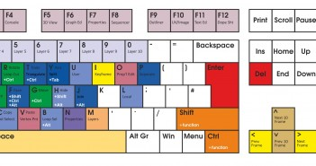

Principais Comandos e atalhos do Blender
Lista dos principais comandos e atalhos
A lista abaixo apresentada identifica os atalhos mais utilizados e comuns. Deve ter em conta que existem ainda outros atalhos e é possível reconfigurar ou criar novos atalhos.
Os atalhos podem só funcionar ou funcionar de forma diferente em modos de trabalho ou editores diferentes. Por exemplo, se clicar no P em modo Object e em modo Edit obterá resultados diferentes. Ocorre uma situação similar se clicar no M com o cursor do rato em cima da janela 3D Viewport e na janela Timeline. Ou seja, um mesmo atalho pode produzir resultados diferentes consoante o editor (i.e. 3D Viewport, Editor de Nós, etc.) onde está ou o modo de trabalho (i.e. Object Mode, Pose Mode, etc.) que está a utilizar.
GERAIS
- Pesquisar função : Barra de Espaço
- Barra de ferramentas (Toolbar) : T (na 3D View)
- Propriedades : N (na 3D View)
- Desfazer (Undo) : Ctrl + Z
- Refazer : Ctrl + Shift + Z
- Histórico do Desfazer (Undo): Ctrl + Alt + Z
- Duplicar : Shift + D
- Duplicar linkado: Alt + D
- Mover para outra camada (layer) : M
- Esconder (Hide) : H
- Revelar escondido : Alt + H
- Esconder tudo menos o selecionado : Shift + H
- Criar parentesco (Child-Parent): Ctrl + P
- Desfazer parentesco : Alt + P
- Restabelecer Cursor 3D no centro : Shift + C
- Atalho para menu de Snap : Shift + S
- Adicionar a grupo : Ctrl + G
- Guardar configurações/preferência no ficheiro Default : Ctrl + U
- Aceder às preferências de utilizador: Ctrl + Alt + U
- Pop-up com opções de Ferramentas: F6
FICHEIROS
- Anexar (Append) ficheiro : Shift + F1
- Guardar ficheiro : Ctrl + S
MANIPULAÇÃO
- Mover/translação: G
- Rotação: R
- Escala: S
- Retirar/limpar operações de translação: Alt + G
- Retirar/limpar operações de rotação: Alt + R
- Retirar/limpar operações de escala: Alt + S
- Movimentos precisos : [Pressionar] Shift
- Movimentos com incrementos constantes : [Pressionar] Ctrl
- Bloquear eixo : Botão do Meio do Rato ou pressionar X/Y/Z
VISÃO
- Visão livre controlada pelo rato : Botão do Meio do Rato (BMR)
- Zoom : Roda do Rato
- Visão topo : Numpad 7
- Visão frente: Numpad 1
- Visão lado : Numpad 3
- Alternar perspetiva/ortogonal : Numpad 5
- Visão oposta (de baixo, trás e outro lado) : Ctrl + Numpad 1/3/7
- Visão câmara : Numpad 0
- Colocar câmara na visão atual : CTRL+ Alt + Numpad 0
- Zoom ao objeto : Numpad .
- Visão lado : Numpad 3
- Visão local (só mostra o que estiver selecionado) : Numpad /
- Modo Fullscreen : Alt + F11
- Alternar entre modo de visão sólido e em wireframe (arame): Z
- Alterna entre modo de visão sólido e textura: ALT + Z
- Alterna entre modo de visão sólido e rendered: Shift + Z
SELECÇÃO
- Selecionar objeto : Botão Direito do Rato
- Seleção múltipla : Shift + Botão Direito do Rato
- Selecionar tudo e retirar seleção de tudo : A
- Selecionar objeto atrás : Alt + Right Click
- Selecionar ligado (Linked) : L
- Selecionar tudo o que está ligado (Linked) : Ctrl + L
- Seleção por caixa (Box) : B
- Seleção por círculo (Circle) : C
- Ferramenta de laço (Lasso) : Ctrl + Click
- Inverter seleção : Ctrl + I
- Aumenta/expande gradualmente a seleção: Ctrl + NUMPAD+
- Diminui/reduz gradualmente a seleção: Ctrl + NUMPAD–
- Seleciona Edge Loops: Alt + BDR (em GNU/Linux é Shift + Alt + BDR)
- Seleciona Edge Rings: Ctrl + Alt + BDR
- Pop-up menu de seleção: Alt + BDR
MODELAÇÃO
Object Mode
- (Des)ligar Proportional Editing : O (letra ó)
- Criar Seam : Ctrl + E
- Espelhar objeto : Ctrl + M (e selecionar eixo para espelhar)
- Unir (une as geometrias) os objetos selecionados: Ctrl + J
- Adicionar novo objeto : Shift + A
- Apagar objeto: X ou Delete
Edit Mode
- Adicionar (mesh, curve, etc.) dentro do mesmo objeto: Shift + A
- Apagar: X ou Delete
- Criar face : F
- Preencher com faces : Alt+F
- Menu com várias operações especiais : W
- Extrusão : E
- Desligar vértices/arestas : V
- Separar : P
- Criar Loopcut : Ctrl + R
- (Des)ligar Proportional Editing : O (letra ó)
- Criar Seam : Ctrl + E
- Unir vértices : Alt + M
- Shrink/Fatten (Emagrecer/Engordar) : Alt + S
- Faca/cortar (Knife) : K + Desenhar corte clicando no Botão Esquerdo do Rato
- Preencher (Fill) : Alt + F
- Embelezar geometria do preenchimento : Shift + Alt + F
EDITORES E MODOS DE TRABALHO
- Modo Edit/Object : TAB
- Modo Vertex Paint : V
- Modo Weight Paint : Ctrl + TAB
- Alternar entre configurações das janelas de trabalho : Ctrl + Setas Esq./Dir.
- Maximizar editor: Ctrl + Setas Cima (com seta baixo restaura)
EDIÇÃO DE CURVAS (Curves )
- Fechar Path : Alt + C
- Adicionar controlador/ponto : Ctrl + Clique
- Subdividir : W
- Inclinação (Tilt) : Ctrl + T
- Limpar inclinação : Alt + T
- Modificar controlador para Bezier : H
- Modificar controlador para Vector : V
- Reverter para controlador original : Shift + H
RENDERIZAÇÃO
- Só renderizar área selecionada : Shift + B
- Renderizar imagem: F12
- Renderizar animação : Ctrl + F12
- Parar renderização : Esc
- Guardar renderização : F3
- Mostrar última renderização : F11
SCULPTING
- Alterar dimensão do Brush : F
- Alterar intensidade/força do Brush : Shift + F
ANIMAÇÃO
- Reproduzir/Parar animação : Alt + A
- Reproduzir animação em sentido inverso : Alt + Shift + A
- Frame seguinte : Seta direita
- Frame prévia : Seta esquerda
- Keyframe seguinte : Seta cima
- Keyframe anterior : Seta baixo
- Saltar para início : Shift + Seta esquerda
- Saltar para final : Shift + Seta direita
- Scroll nas frames : Alt + Roda do rato
- Inserir Keyframe : I
- Remover Keyframe : Alt + I
LINHA DE TEMPO (Timeline)
- Definir Frame inicial (Start): S
- Definir Frame final (End) : E
- Mostrar todas as Frames : Home
- Adicionar marcador : M
- Mover marcador : Botão Direito do Rato e arrastar
- Alternar entre Frames/Segundos : Ctrl + T
EDITOR DE VÍDEO (Video Sequence Editor )
- Strip seguinte : Page Up
- Strip prévia : Page Down
- Selecionar Strip: Botão Direito do Rato
- Selecionar múltiplas Strips: Shift + Botão Direito do Rato
- Criar MetaStrip: M
- Mover Strip: G
- Dividir Strip (não-destrutivo): K
- Dividir Strip (definitivo): Shift + K
- Trancar Strip : Shift + L
- Destrancar Strip : Shift + Alt + L
- Copiar/Colar Strip : Ctrl + C , Ctrl + V
- Duplicar Strip : Shift + D
- Separar imagens : Y
- Colocar Strip na posição do Scrubber (linha verde) : Shift + S
ARMADURAS
- Adicionar Bone: Shift + A
- Adicionar Bone por extrusão : E / Ctrl + Clique
- Alinhar Bones : Ctrl + Alt + A
- Mover Bone para Layers : M
- Ver Bone Layers : Shift + M
- Alterar direção do Bone : Alt + F
EDITOR DE NÓS
- Adicionar nó : Shift + A
- Cortar ligações (Links) : Ctrl + Botão Esquerdo do Rato
- Abrir/fechar nó : H
- Criar grupo : Ctrl + G
- Desagrupar : Alt + G
- Editar grupo : TAB
- Deslocar janela: Botão do Meio do Rato
- Mover fundo (backdrop): Alt + Botão do Meio do Rato
- Zoom In ao fundo (backdrop): V
- Zoom Out ao fundo (backdrop): Alt + V
- Propriedades : N
POSE MODE
- Aplicar Pose : Ctrl + A
- Desfazer rotação : Alt + R
- Desfazer localização : Alt + L
- Desfazer escala : Alt + S
- Copiar Pose : Ctrl + C
- Colar Pose : Ctrl + V
- Adicionar IK (inverse kinematics): Shift + I
- Remover IK : Ctrl + Alt + I
- Adicionar Bone a grupo : Ctrl + G
- Relax Pose : Alt + E
Criar novos atalhos
Na aba de Input das preferencias de utilizador é possível reconfigurar e criar novos atalhos, importar/exportar configurações, etc.

Recursos sobre os atalhos
